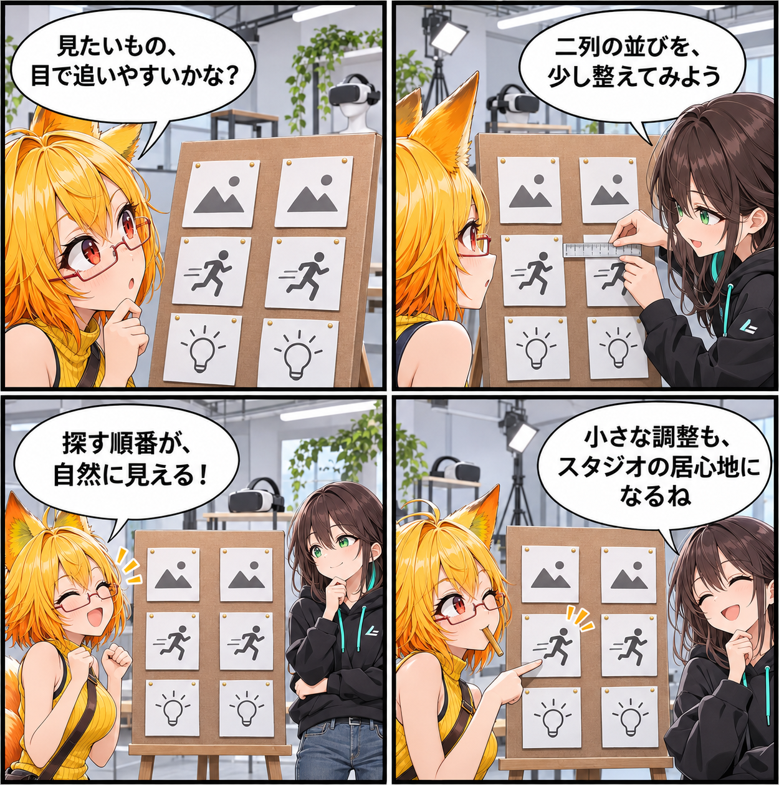

2026.11.25 / Development Log
並べて見つける、スタジオの小さな調整
MainSceneの一覧表示で、二列に並ぶカードを見渡しやすくするため、セル幅と一部パネルの縦位置を見直しました。
集計期間は2026-11-24 03:00:00 JSTから2026-11-25 02:59:59 JSTまで、対象はViewerの
main です。集計終了時点のHEADは c33733a41be121b814a1732df8c9eae089ace2ea、対象コミットは1件（4e98fb2f2e7d491acfcff51a1fe96be996084085）です。未コミットのScene変更と監査メモは実績に含めていません。
二列で見渡すための調整
対象コミットでは、Unityの MainScene.unity にある二列グリッドのセル幅を5か所、一部パネルの縦位置を2か所更新しました。大きな機能を増やす変更ではなく、並んだ項目を目で追うときの配置を確かめるためのレイアウト調整です。
実績として扱う範囲
コミットメッセージは「DevSpace review snapshot」です。ここでは、スナップショットに記録されたセル幅と位置の更新だけを事実として扱います。どの一覧が最終的にどう見えるか、あるいは機能が完成・公開されたかまでは、このコミットだけからは断定しません。
4コマの話
ろひは二列のカードを少し離れて眺め、ルミナは間隔を測ります。項目の順を自然に追えることに気づく、小さなUI点検の場面にしました。
まとめ
今回の記録は、MainSceneにある二列グリッドのセル幅とパネル位置を調整した1コミットです。見通しを整える小さな変更も、スタジオで迷わず選ぶための土台になります。